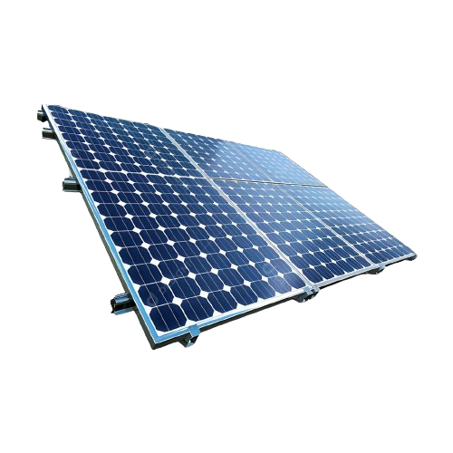
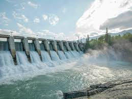

Sobre
Tratando-se das fontes de energia renováveis, são aquelas que podem se manter disponiveis em um grande período de tempo,
utilizando de recursos que se regeneram quanto se mantem ativos permanentemente ou por um longo periodo de tempo. Dentre elas, alguns exemplos são:Exemplos de Energia sustentável
Energia solar
Consiste no aproveitamento da radiação solar emitida sobre a Terra. Trata-se, portanto, de uma fonte de energia que,
além de inesgotável, é altamente potente, pois uma grande quantidade de radiação é emitida sobre o planeta todos os dias.
A sua principal questão, todavia, não é a sua disponibilidade na natureza, e sim as formas de aproveitá-la para a geração de
eletricidade."
Energia eólica
A energia eólica, que converte a energia de recursos inesgotáveis como o vento em eletricidade, é uma aposta sustentável e valiosa para o futuro.
O aproveitamento da força do vento exige a instalação de parques eólicos, em terra ou no mar, envolvendo dezenas de aerogeradores.

Energia hídrica
A energia hídrica representa a maior parte da fonte energética do Brasil. A energia hidrelétrica é uma fonte de energia que converte a energia da água em energia elétrica.
Esse processo ocorre em usinas hidrelétricas, aproveitando o potencial hidráulico dos rios.
No Brasil, está localizada a segunda maior usina do mundo: Itaipu, que abastece 19% dos brasileiros.São 14 gigawatts (GW) de potência instalada,
gerando eletricidade através da água.
inspiração
Energia hídrica: https://www.neoenergia.com/energia-hidrica.
Contato
Gabrielly.ingrid.cruz@escola.pr.gov.br